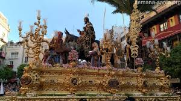
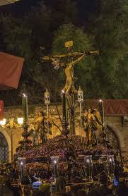

Semana Santa de Sevilla
Domingo de Ramos
Hermandades que procesionan el Domingo de Ramos en Sevilla
La Borriquita
La Santa Cena

Jesús Despojado

La Paz

San Roque

La Amargura

La Estrella

El Amor

La Hiniesta

Lunes Santo
Hermandades que procesionan el Lunes Santo en Sevilla
Beso de Judas

San Gonzalo

San Pablo

Santa Marta

Santa Genoveva

Las Aguas

El Museo

Las Penas de San Vicente

Vera-Cruz
Martes Santo
Hermandades que procesionan el Martes Santo en Sevilla
El Cerro

San Benito

Dulce Nombre

Candelaria

San Esteban

Los Javieres

Los Estudiantes

Santa Cruz

Miércoles Santo
Hermandades que procesionan el Miércoles Santo en Sevilla
El Carmen Doloroso

La Sed

El Buen Fin

San Bernardo

La Lanzada

El Baratillo

Los Panaderos

Las siete palabras

Jueves Santo
Hermandades que procesionan el Jueves Santo en Sevilla
Monte-Sion

Los Negritos

El Valle

La Quinta Angustia

La exaltación

La Pasión

Las Cigarreras

La Madrugá
Hermandades que procesionan en La Madrugá en Sevilla
El Silencio

La Macarena

El Gran Poder

El Calvario

La Esperanza de Triana

Los gitanos